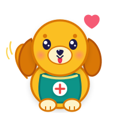

當冰封的心遇見溫暖的凝視
動物輔助治療如何幫助思覺失調個案找回生活動機與人際連結
🐾 臨床實證與大眾轉譯簡報｜點擊下方「下一頁」或按鍵盤右箭頭 → 開始
第一單元・臨床困境與概念
被誤解的隱形重擔：什麼是「負性症狀」？
打破社會污名：這不是性格冷漠或偷懶，而是神經線路暫時熄火

🛑 思覺失調症的四大頑固向度
• 動機缺乏：喪失自主啟動行為的能力，整天臥床不想出門自理。
• 社交退縮：主動切斷人際互動，緊閉心門與外界失聯。
• 情感平淡：臉部表情變少、語調單一，內心情感難以向外表達。
• 感受不到快樂：對以往喜愛的嗜好或社交活動失去期待與喜悅。
• 社交退縮：主動切斷人際互動，緊閉心門與外界失聯。
• 情感平淡：臉部表情變少、語調單一，內心情感難以向外表達。
• 感受不到快樂：對以往喜愛的嗜好或社交活動失去期待與喜悅。
💊 傳統醫療的瓶頸與盲點
• 現代抗精神病藥物能有效平息幻聽與妄想（正性症狀），但對負性症狀的改善極為有限。
• 個案在症狀穩定後，仍長期面臨生活自理困難與社交孤立。
• 長期照顧的家屬常因無力而陷入自責與誤解，急需非藥物的創新復健介入。
• 個案在症狀穩定後，仍長期面臨生活自理困難與社交孤立。
• 長期照顧的家屬常因無力而陷入自責與誤解，急需非藥物的創新復健介入。
🌟 大眾與家屬視角：
「他不是不願意好起來，而是心靈的啟動馬達暫時當機了。」當言語的勸告與催促都變成壓力時，動物不帶評價的純粹存在，成為穿透防備的第一道光。
第二單元・療癒機制前置
三大療癒機轉：為什麼動物能穿透防備？
生化指標與心理鷹架：人與動物互動如何重啟大腦的信任與動機？

🧬 1. 催產素迴路（愛的荷爾蒙）
• 人與動物溫和的凝視與撫摸，能促發大腦分泌催產素。
• 活化腦內獎勵系統，重新喚醒對世界微小美好的期待，化解冷漠防備。
• 活化腦內獎勵系統，重新喚醒對世界微小美好的期待，化解冷漠防備。
🩸 2. 皮質醇壓力熄火
• 接觸動物能迅速平息過度亢奮的自律神經與壓力軸。
• 關閉長期緊繃的「防空警報」，讓身心從深層恐懼中放鬆下來。
• 關閉長期緊繃的「防空警報」，讓身心從深層恐懼中放鬆下來。
🪜 3. 社交復健鷹架
• 搭建四階循序漸進的橋樑：
單純摸狗 → 對狗說話 → 與治療師對話 → 跨病友合作散步。
• 在無評判的氛圍下重構社交信心。
單純摸狗 → 對狗說話 → 與治療師對話 → 跨病友合作散步。
• 在無評判的氛圍下重構社交信心。
🌟 大眾生活解讀：
動物不會問生病的人「你今天怎麼沒去工作？」當小狗輕輕把下巴靠在個案膝蓋上時，無條件的接納給了大腦最深的安全感，這是任何說教都做不到的。
🎮 互動體驗頁・機轉探索
心靈與生活功能配對：猜猜動物如何改變我們？
點擊下方卡片揭開大腦與日常生活復健的奧秘（請點擊按鈕親自體驗）
情境題 1
撫摸小狗 15 分鐘後，個案體內的生理指數有什麼變化？
✨ 解密解答：
緊繃的壓力荷爾蒙（皮質醇）顯著下降，代表安全感的催產素迅速分泌！大腦警報解除，肌肉緊繃與焦慮感一掃而空。
緊繃的壓力荷爾蒙（皮質醇）顯著下降，代表安全感的催產素迅速分泌！大腦警報解除，肌肉緊繃與焦慮感一掃而空。
情境題 2
治療師請個案拿梳子幫狗狗梳毛，這是在訓練哪項生活技能？
✨ 解密解答：
手部精細動作與雙手協調！梳毛動作完全對應穿衣服扣鈕扣、拿湯匙吃飯與洗頭自理，是最高級的生活復健。
手部精細動作與雙手協調！梳毛動作完全對應穿衣服扣鈕扣、拿湯匙吃飯與洗頭自理，是最高級的生活復健。
情境題 3
為什麼個案平時抗拒散步，卻願意緊握牽繩帶狗狗出門？
✨ 解密解答：
「被需要的責任感」！從平時「被人照顧的病患」，翻轉為「能保護照顧狗狗的守護者」，重拾尊嚴與自我價值。
「被需要的責任感」！從平時「被人照顧的病患」，翻轉為「能保護照顧狗狗的守護者」，重拾尊嚴與自我價值。
💡 隨堂互動結語：在動物輔助治療的世界裡，「玩耍」與「撫摸」從來不只是消遣，每一項溫馨的互動背後，都精準對應著大腦神經修復與生活自理能力！
第三單元・全實證文獻總覽
實證全景（一）：全球大型統合分析與系統性回顧
科學實證確立：動物介入對負性症狀具有實質且特異的臨床成效
🌐 Peraile-Huerta (2026) 全球統合
• 全球最新統合分析（統合 12 篇研究、400 多位個案）。
• 證實動物介入對負性症狀具有明確顯著改善，但正性症狀無差異，證明動物對退縮症狀具特質療效，非心理安慰劑。
• 證實動物介入對負性症狀具有明確顯著改善，但正性症狀無差異，證明動物對退縮症狀具特質療效，非心理安慰劑。
🔍 Tyssedal et al. (2023) 挪威回顧
• 挪威國際系統性回顧。
• 梳理多項嚴謹試驗，指出動物是開啟互動的「破冰引路人」；在配合專業結構化復健時，能最大化活化生活功能。
• 梳理多項嚴謹試驗，指出動物是開啟互動的「破冰引路人」；在配合專業結構化復健時，能最大化活化生活功能。
📖 Hawkins et al. (2019) 愛丁堡回顧
• 英國愛丁堡大學系統回顧。
• 奠定早期實證基線，率先呼籲推行「雙向療癒與動物福祉」，強調保護治療動物是獲得良好療效的前提。
• 奠定早期實證基線，率先呼籲推行「雙向療癒與動物福祉」，強調保護治療動物是獲得良好療效的前提。
🌟 科學給大眾的安心保障：
國際大型統合實證明確告訴我們，動物輔助治療不是少數人的民間偏方，而是有跨國成百上千位個案追蹤數據背書的正式醫療輔助方案。
第三單元・全實證文獻總覽
實證全景（二）：三大臨床隨機對照試驗 (RCT)
走入臨床現場：從台灣本土全勤奇蹟、土耳其馬術到西班牙生化化驗
🐕 Chen et al. (2021) 台灣長庚與台大
• 台灣長庚與台大職能治療團隊。
• 4 隻認證治療犬陪伴 12 週，中老年慢性個案自發性會話與社交大躍進。
• 創下「全勤無人脫落」的奇蹟紀錄，出席意願遠超常規復健。
• 4 隻認證治療犬陪伴 12 週，中老年慢性個案自發性會話與社交大躍進。
• 創下「全勤無人脫落」的奇蹟紀錄，出席意願遠超常規復健。
🐴 Öztürk et al. (2025) 土耳其馬術
• 土耳其馬術隨機對照試驗。
• 藉由撫摸、照護溫馴馬匹與安全騎乘，個案的深層孤獨感大幅消融，生活滿意度與尊嚴感達到飛躍性提升。
• 藉由撫摸、照護溫馴馬匹與安全騎乘，個案的深層孤獨感大幅消融，生活滿意度與尊嚴感達到飛躍性提升。
🐕 Calvo et al. (2016) 西班牙長週期
• 西班牙 6 個月長週期試驗。
• 用客觀口水化驗（唾液皮質醇）證實接觸犬隻能使壓力荷爾蒙顯著下降，且復健出席率高達九成以上。
• 用客觀口水化驗（唾液皮質醇）證實接觸犬隻能使壓力荷爾蒙顯著下降，且復健出席率高達九成以上。
🌟 臨床現場的動人啟發：
在精神復健中，讓慢性個案願意每週準時報到、持續數個月不缺席，是極其罕見的奇蹟。這證明只要給予充滿溫度、沒有指責的環境，個案渴望與世界相連的心依然熾熱。
🔍 互動體驗頁・文獻展廳
6 篇文獻互動探索指南：點選查閱研究成果
點選上方文獻標籤，下方即時展開該研究的詳細背景與生活轉譯
第四單元・生活功能轉譯
走入日常的復健：摸狗梳毛如何轉化為生活自理？
將動物輔助治療的點滴，無縫接軌至日常洗漱、穿衣與出門步態
✂️ 梳毛、撫摸與扣配件
• 生活對應：穿衣扣鈕扣、拿筷子夾菜、洗澡自理。
• 握持梳子與替小狗佩戴項圈的動作，自然訓練了手部微細肌力與靈巧度，完全不需枯燥的復健器材。
• 握持梳子與替小狗佩戴項圈的動作，自然訓練了手部微細肌力與靈巧度，完全不需枯燥的復健器材。
🦮 牽繩散步與餵食定點
• 生活對應：外出搭車、社區購物、肌耐力與平衡。
• 牽著狗狗踏出房門，注意力集中在狗狗身上，大幅消弭了對外界目光的恐懼，步伐更加穩健。
• 牽著狗狗踏出房門，注意力集中在狗狗身上，大幅消弭了對外界目光的恐懼，步伐更加穩健。
🗣️ 討論喜好與下指令
• 生活對應：重啟家人對話、主動表達需求。
• 「狗狗今天想吃哪種零食？」成為個案與治療師、家人之間最自然的破冰話題，言語不再貧乏。
• 「狗狗今天想吃哪種零食？」成為個案與治療師、家人之間最自然的破冰話題，言語不再貧乏。
🌟 職能治療師的叮嚀：
復健從來不需要冷冰冰。當個案不是「被要求去做復健」，而是「為了心愛的毛朋友而伸出手」時，內在驅動力帶來的進步幅度往往讓所有人動容。
第四單元・雙向療癒倫理
健康的雙向療癒：尊重生命與動物福祉 (One Welfare)
學會溫柔照顧另一個脆弱的生命，是人性尊嚴與同理心復甦的開始
🐾 療癒不是單方面的索取
• 治療動物不是沒有感情的工具，牠們在病房與教室中同樣會感受到疲累。
• 嚴格遵循國際動物福祉標準（工時限制、充足水分與安靜休息區）。
• 治療師隨時評估動物的放鬆狀態，確保互動在充滿愛與安全的氛圍下進行。
• 嚴格遵循國際動物福祉標準（工時限制、充足水分與安靜休息區）。
• 治療師隨時評估動物的放鬆狀態，確保互動在充滿愛與安全的氛圍下進行。
🌱 同理心與尊嚴的奇蹟萌芽
• 當個案學會觀察小狗舔嘴唇、打哈欠等「需要休息」的細微訊號時，學會了體貼另一個生命。
• 個案會主動對治療師說：「小狗累了，我們讓牠喝水休息一下吧。」
• 這種自發性的關懷與同理，代表冰封已久的情感核心真正復甦。
• 個案會主動對治療師說：「小狗累了，我們讓牠喝水休息一下吧。」
• 這種自發性的關懷與同理，代表冰封已久的情感核心真正復甦。
🌟 雙向療癒的真諦：
當個案意識到自己擁有「讓眼前小動物感到舒適與快樂」的力量時，他們重新看見了自己存在的價值。保護脆弱生命的同時，自己也得到了最深度的救贖。
第五單元・去污名化專題
給家屬的一封信：從封閉孤立到溫柔破冰
理解取代指責，用最微小的肯定迎接生命的慢慢轉身
1. 用理解取代指責
別再對個案說「你只要肯踏出一步就好」。理解動機缺乏是疾病本身造成的神經障礙，卸下長期壓在家庭身上的自責與無助。
2. 肯定最微小的進步
今天願意伸出手撫摸狗狗 3 分鐘、今天願意對狗狗笑一下，都是極具重量的突破。不要急於追求大步躍進，微光終能匯成暖陽。
3. 把笑容帶回家庭
將在動輔教室中看見的放鬆與互動，延續到家庭餐桌上。聊聊狗狗的趣事，讓長期被疾病籠罩的家庭氛圍重新找回歡笑。
💌 家屬心聲轉譯：
「過去幾年家裡客廳總是安靜得讓人害怕。自從他開始參加治療犬活動，某天回家突然主動跟我說『今天那隻柯基腿短短的很可愛』。那一刻我眼淚掉了下來，我知道，我的孩子正在慢慢走回我身邊。」
第五單元・結語與展望
結語：無聲的接納，點亮回家的路
推動醫療與社區共好支持網絡，讓更多冰封的靈魂重新被溫柔擁抱
「動物沒有語言，卻能聽懂最深沉的沉默；
牠們不帶評價的凝視，接住了那些在黑暗中跋涉的心靈。」
牠們不帶評價的凝視，接住了那些在黑暗中跋涉的心靈。」
動物輔助治療不是冰冷的技術，而是一座架在醫療與人心之間的溫柔橋樑。
期待未來能有更多社區機構與醫療團隊攜手，讓毛茸茸的溫暖夥伴，陪伴更多家庭走過幽谷。
期待未來能有更多社區機構與醫療團隊攜手，讓毛茸茸的溫暖夥伴，陪伴更多家庭走過幽谷。